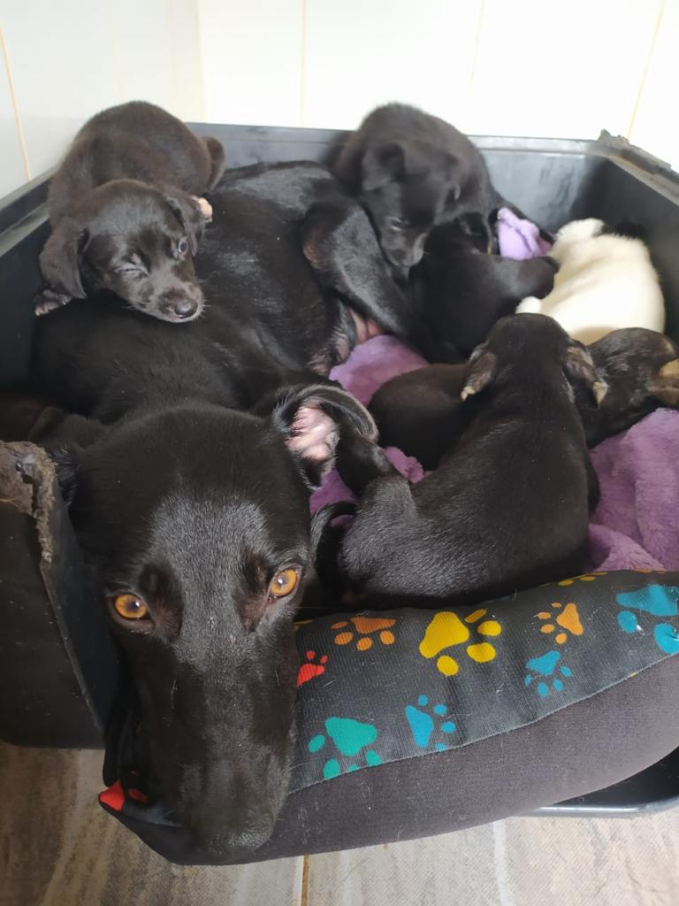
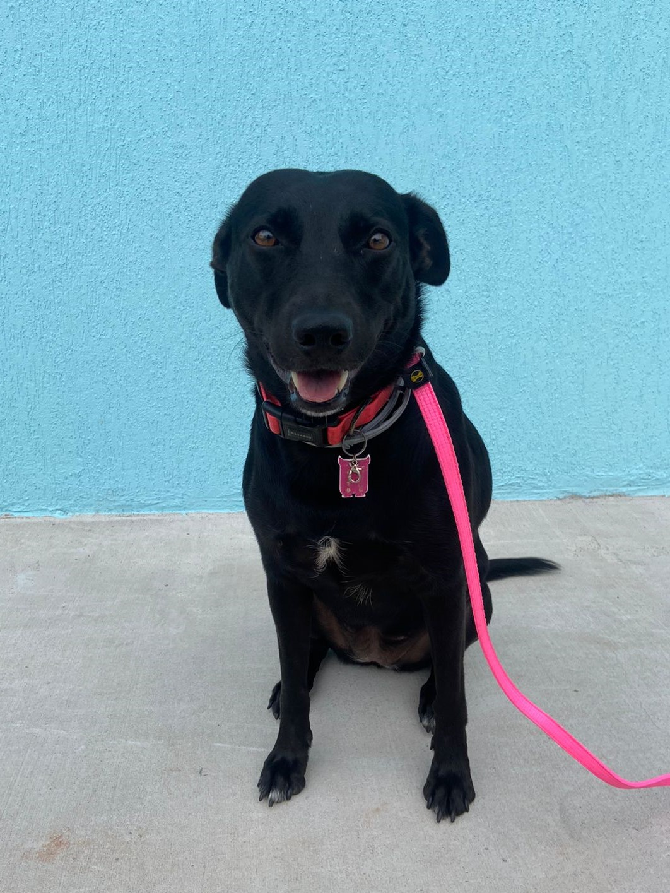

Sobre o resgate
Em dezembro de 2019, Mamãe Gourmet foi abandonada em uma estrada de terra no interior de São Paulo junto com seus sete filhotes recém nascidos. Ela e os filhotes foram resgatados pela Villa do Amigo, ganharam um abrigo, comida, foram castrados, vacinados e vermifugados.
Todos os filhotes receberam nome de comidas e começaram a ser adotados, apenas três dos sete filhotes continuaram no abrigo com a mamãe até ficarem adultos. Após um ano e meio do resgate os três filhotes e a mamãe encontraram um lar, foram adotados todos os quatro pela mesma família, um casal de voluntárias da Villa que se apaixonaram por eles nas visitas ao abrigo.
Mamãe Gourmet
Mamãe é a rainha da casa, ela dá bronca nos filhotes e exige carinho das humanas sempre que ela quiser.
Ela é extremamente companheira e amigável, é uma celebridade na rua de casa pois todos os vizinhos a conhecem e adoram fazer carinho nela, e quem não adoraria fazer carinho nessa carinha linda?
Jaboticaba
Jaboticaba é o galã da família, sempre fazendo uma pose linda prontinho pra ser fotografado. Ele é barulhento, tá sempre latindo pra pessoas que passam na rua ou que entram em casa, mas faz apenas barulho mesmo pois é super bonzinho e amigável.

Trufa
Trufa é a menorzinha e mais carinhosa entre os filhotes. É preguiçosa e tá sempre brigando com o Jaboticaba por causa de brinquedos, os dois tem comportamentos muito parecidos e por isso são chamados de gêmeos, mesmo a Trufa sendo bem menor que o Jaboticaba.

Macarrão
Macarrão é o mais diferente dos irmãos, ao invés de ser todo preto ele é mesclado com bastante marrom. Era o mais medroso no começo, não se aproximava a menos que seus irmãos ou mamãe estivessem junto.
Hoje o Macarrão já é mais sociável, aceita receber carinho de estranhos mas continua sendo mais na dele, muitas vezes preferindo ficar sozinho no quarto enquanto todo mundo tá na sala.